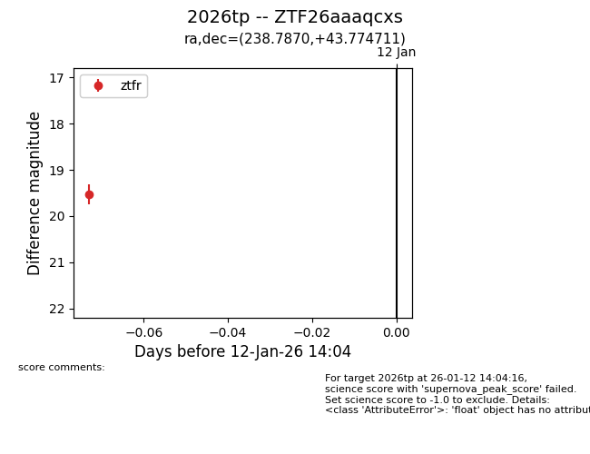
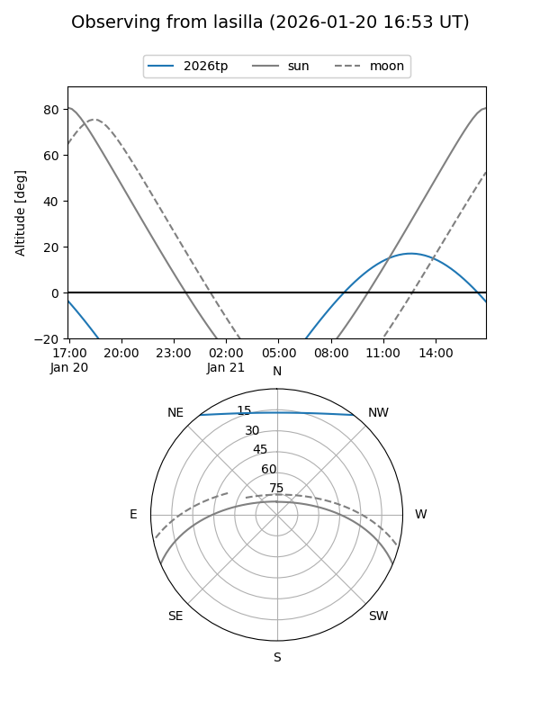
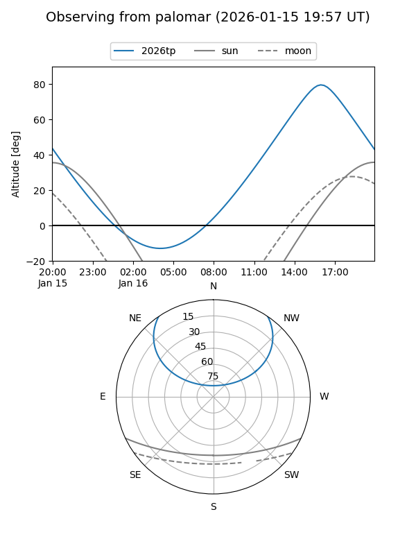
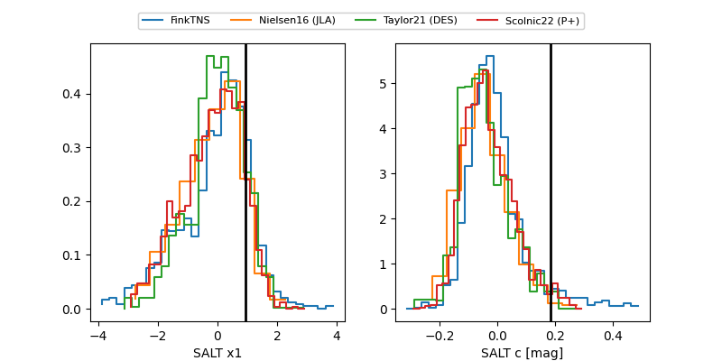

2026tp
Target 2026tp at 2026-01-14 12:40
Aliases and brokers:
FINK: link
Lasair: link
ALeRCE: link
TNS: link
YSE: link
alt names
ZTF26aaaqcxs (ztf,fink_ztf)
2026tp (tns,yse)
Coordinates:
equatorial (ra, dec) = 238.7870,+43.77471
equatorial (HMS+DMS) = 15:55:08.88,+43:46:28.96
galactic (l, b) = (69.6331,+49.68096)
Flags:
Photometry:
last ztfr=19.53
1 ztfr detections
Lightcurve

Visibility


Additional plots
